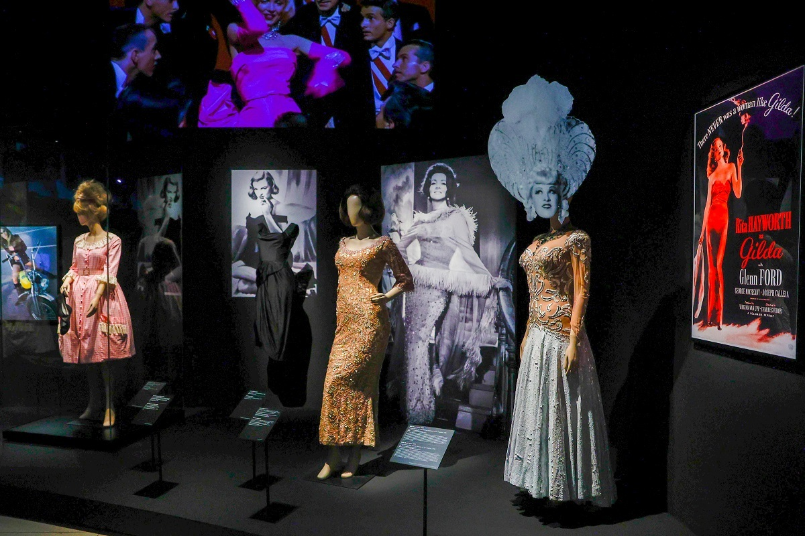
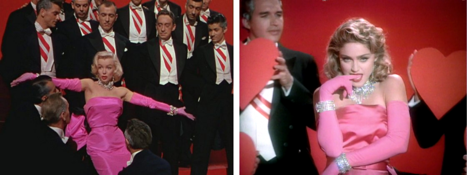
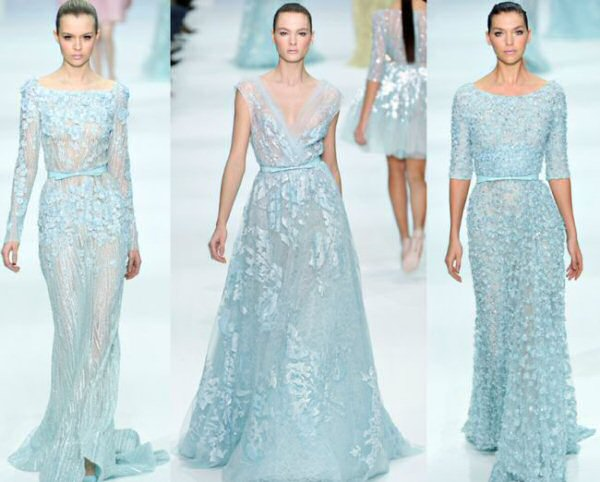
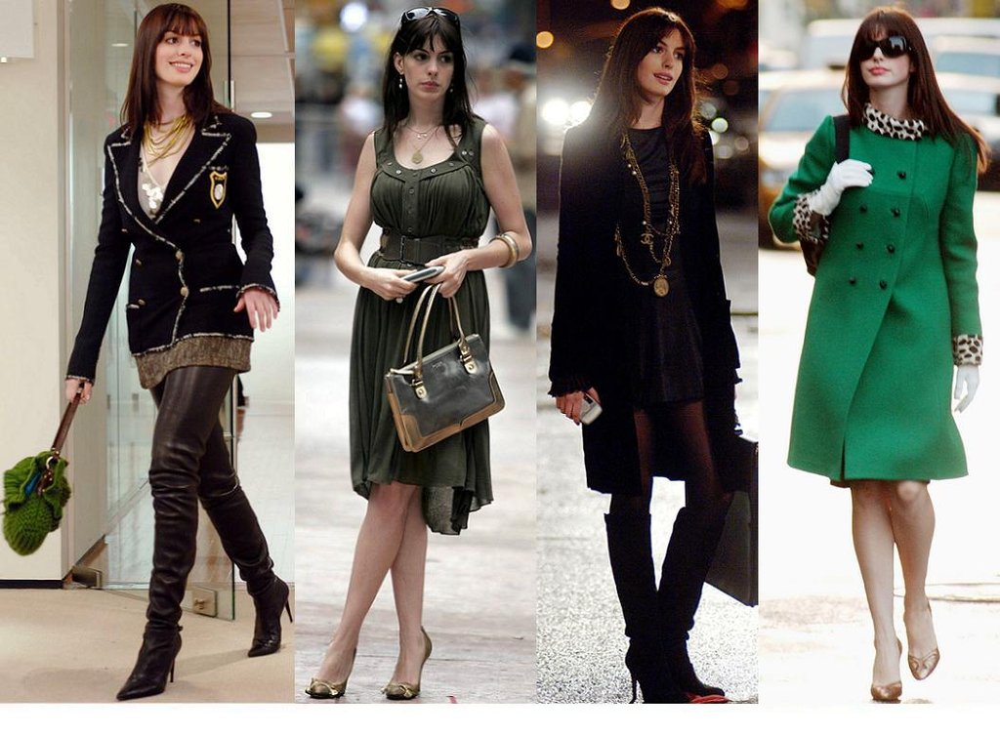

La moda es algo que ha existido desde antes de la llegada cine. Desde que Marie Antoniette portó esos increíbles y pomposos vestidos de estilo manierista y rococó, el concepto de glamour pareció adquirir una forma sólida, aunque realmente la priorización de la belleza y el gusto por el buen vestir existe desde los principios de la civilización. En las antiguas guerras, los reyes, iban a las batallas con sus más finos atuendos porque la imagen visual siempre ha tenido una importancia indestructible.
Con el cine, el cual representa una amalgama de varios tipos de arte, como la fotografía y la música, la moda alcanzó una nueva dimensión; una en la cual las personas se sintieron inspiradas a verse igual de glamorosas que sus estrellas preferidas. Aunque esto es verdad tanto para el público masculino como femenino, nos enfocaremos en la moda de mujeres según el cine.

¿Qué sería de la historia de la moda sin Marilyn Monroe y su icónico estilo? Estrellas como ella tuvieron tanto impacto que incluso una celebridad y cantante de gran fama como Madonna ha basado su estilo en Monroe. En el video de Material Girl, podemos apreciar un vestido de un fuerte tono rosado inspirado en el que Monroe utilizó en "Diamonds are a girl’s best friends" (Los diamantes son el mejor amigo de una chica)”.
Y este no es el único ejemplo. Audrey Hepburn y su revolución con el pequeño vestido negro en la cinta clásica Desayuno en Tiffany’s (1961) representó un antes y un después para la moda. En la exitosa serie norteamericana Gossip Girl, el personaje de Blair Wardorf, interpretada por Leighton Meester, habla constantemente de Hepburn como un modelo a seguir por la elegancia en su estilo de vestir y su espíritu romántico e idealista.
Por eso se dice que lo clásico nunca pasa de moda. Además, lo clásico puede mezclarse con las tendencias que surgen día a día. Lo retro y lo vintaje se enriquecen al ser retomados de forma innovadora en la época actual. Un ejemplo de ello es el labial rojo. Este color representa un tesoro en la moda del cine ya que fue utilizado por la misma Marilyn Monroe. Nadie trata de asemejarse a esta actriz y modelo sin buscar un labial parecido. En la película Maléfica/Maleficent(2014), gracias al look de Angelina Jolie como una villana de personalidad compleja, el labial rojo se aferró a su protagonismo en la gran pantalla.
Uno de los ejemplos más conocidos de como el cine y la moda se han fusionado para crear tendencias es el de la película Frozen (2013). Esta película de Disney que en esencia es para un público infantil explotó como una bomba de atractivas tendencias que hechizó las mentes de varias adolescentes e incluso mujeres de todo tipo de edades.
Disney, en efecto, no sólo ha rediseñado sus estereotipos de princesas (¡Y reinas!) con historias llenas de empoderamiento femenino y personalidades dotadas de fortaleza. También ha hecho que la moda florezca con cada nuevo vestido: Cenicienta (2015) y La Bella y la Bestia (2017) lo comprueban. Sin embargo, claro que en el cine hay mucho más que debe ser mencionado. Desde Julia Roberts en Pretty Woman/ Mujer Bonita (1990), Anne Hathaway en The Devil Wears Prada/El Diablo vise a la moda (2006) hasta Gal Gadot interpretando a la soñadora y perseverante Diana en The Wonder Woman/La Mujer Maravilla (2017).
Para ti, ¿Cuál ha sido el mejor look de moda que has visto en una película?
